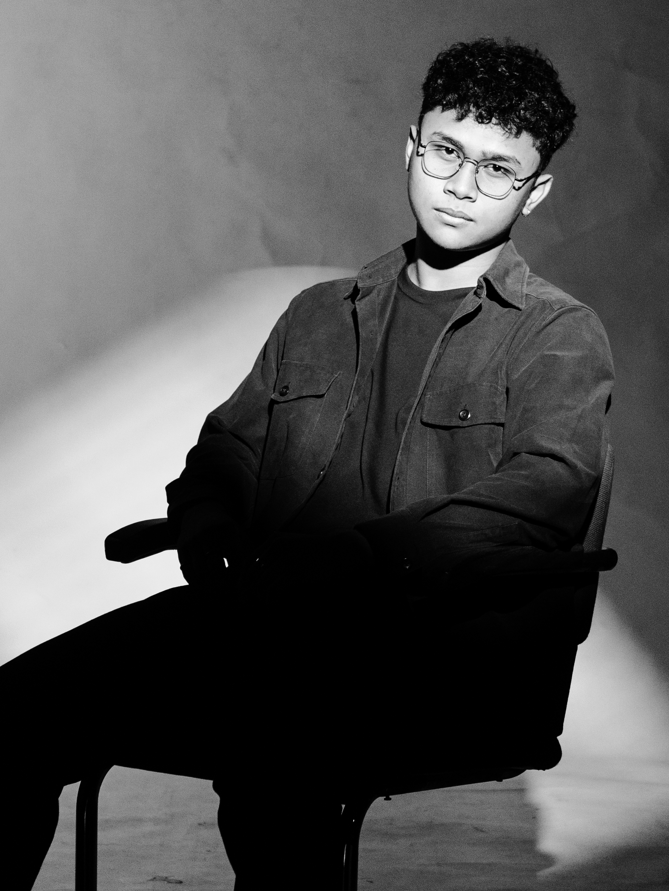
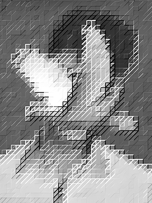

Currently
Previously in
Summary
Láyon holds a Master's degree in Data Science from Ateneo de Manila University. Upon graduation, they received the Mulry Award for Literary Excellence and the Ateneo College Awards of the Arts in Poetry. They are also a recipient of the National Youth Achievement in Literary Arts, awarded by the Philippine National Committee on Literary Arts.
They’re a member of Linangan sa Imahen, Retorika, at Anyo (LIRA), and their work has appeared in the regular issues of HEIGHTS, Ateneo’s literary publication, where they also served as managing editor. Their academic and creative interests lie at the confluence of artificial intelligence, language, and the posthuman.
Akala ni Láyon matematika ang mapapangasawa niya. Ngunit nang makilala ang pagtula, hindi na mabuo-buo ang kanyang isip. Hanggang ngayon, hinahanap niya pa rin ang sariling layon.
layon.connect@gmail.com · TLDTD